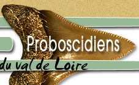
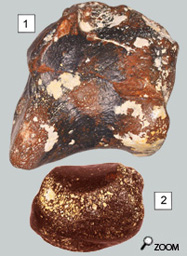
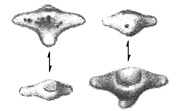
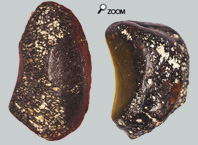

|
  |
||
 |
|
||
Os carpiens... Les os de proboscidiens ne sont pas fréquents dans les faluns. La raison c'est qu'ils sont de taille assez importante et qu'il est rare qu'ils aient été conservés intégralement. Les seuls à échapper un peu à la règle sont les os carpiens ou tarsiens et les phalanges. Ce sont des os trapus que les os longs qui résistent mieux à l'érosion ou aux efforts mécaniques au cours du temps.
Il arrive que des os de formes très diverses soient trouvés dans les tas de sédiments. D’une manière générale, il peut s’agir d’os carpiens ou tarsiens d’éléphants. Voici 3 exemples d’os carpiens assez bien conservés : Un unciforme (image du haut), un trapézoïde et un lunatum (image du bas). Il doit en exister d'autres, rangés dans les collections de fossiles des faluns dans le tiroir "fourre-tout". Et pourtant, certains os ont des tailles impressionnantes! Il est assez facile de les identifier.
Phalanges...   .Chez les éléphants, sur la plupart des doigts, la phalange distale est, soit absente, soit vestigiale. Si elle existe, elle présente une forme atrophiée très dérivée et très énigmatique. Il en existe certainement dans les boites de collections mais elles sont difficiles à déterminer.
Sesamoïdes... Par contre, les sésamoïdes doivent pouvoir être retrouvés assez facilement. En effet, ces os sont 
|
|||